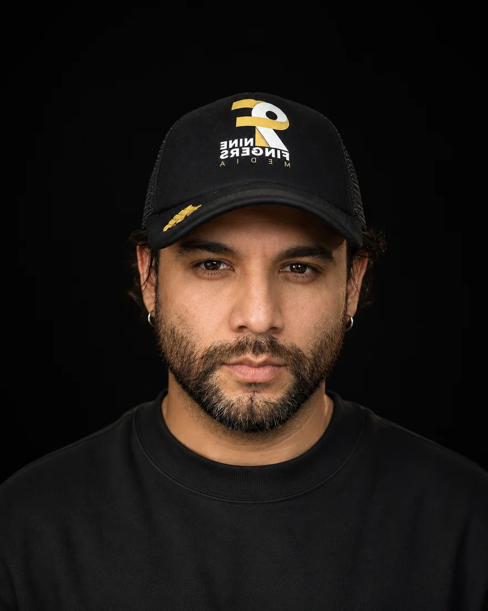

Mi carrera empezó donde la noche nunca duerme. Entre cocinas, barras y escenarios aprendí que el diseño tiene que funcionar bajo presión y provocar algo en el momento. Esa escuela me hizo rápido, versátil y atento al detalle, y me enseñó a ver las marcas como experiencias que se sienten y se recuerdan.
Hoy colaboro con el Metro de la Ciudad de México, donde el diseño cumple una función real en la vida de millones de personas. En mis tiempos libres trabajo como freelance con marcas y conceptos que apenas están naciendo. Y cuando no estoy diseñando, probablemente ando con un café en la mano, escuchando música o siguiendo algún deporte.
Intro
- Sindicato Nacional del Metro CDMXContent Manager & Diseñador Gráfico2022 - Actualmente
- Grupo CinbersolGerente de Comunicación e Imagen Corporativa2022 - 2024
- Grupo CinbersolDiseñador Gráfico2021 - 2022
- VisacomCommunity Manager2020 - 2021
Freelance
- HolyBranding & Concepto de marca2026
- Gloup Wellness LabBranding, Concepto de marca & Website2025
- CrecienteBranding2024
- The Joy RoomBranding2023
- Dirty DandyConcepto de marca2023
- REST ElectrolytesBranding & Concepto de marca2023
- Casa LuluRe Branding2022